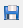

3. Mimics IDE¶
Mimics IDE is the environment that provides comprehensive facilites to Mimics users to develop scripts. Mimics IDE consists of an Editor, a Console and a Scripting Library.
3.1. Editor¶
Mimics comes with a built-in editor. The editor can be accessed via the Mimics menu: Script → Toggle Editor. The editor will open in a separate window.
{kind=link}
In the editor you can create a new project via the button. To save a project click the  or button. To open an existing project click the  button.
In the left panel of the editor window, the user can view all the scripts present in the selected folder. Clicking on a script will open it in the editor. To run the script, click the button or press F5 or CTRL-R. To access the help page of the Mimics API click to the button.
button.
In the left panel of the editor window, the user can view all the scripts present in the selected folder. Clicking on a script will open it in the editor. To run the script, click the button or press F5 or CTRL-R. To access the help page of the Mimics API click to the button.
3.2. Python console¶
An alternative method for executing Python commands is via the built-in Python console in Mimics. You can show or hide the console via the Mimics menu: Script → Toggle Console.
{kind=link}
3.3. Scripting Library¶
A third way method for executing Python scripts is via the Mimics menu Script → Scripting Library.
As explained earlier, you can specify a path to a particular script directory via File → Preferences → Scripting in Mimics. Any scripts present in the specified folder will automatically be registered under the Scripting Library. It is then possible to execute such scripts with a single click. This is the ideal method for users who need to execute a script without needing to see or modify the script. (You need to restart Mimics for the changes to become effective.)
3.4. External IDE¶
Mimics is compatible with with external Integrated Development Environments (IDE). You can run your script from an external IDE. For more information see the section External IDE of the scripting guide.